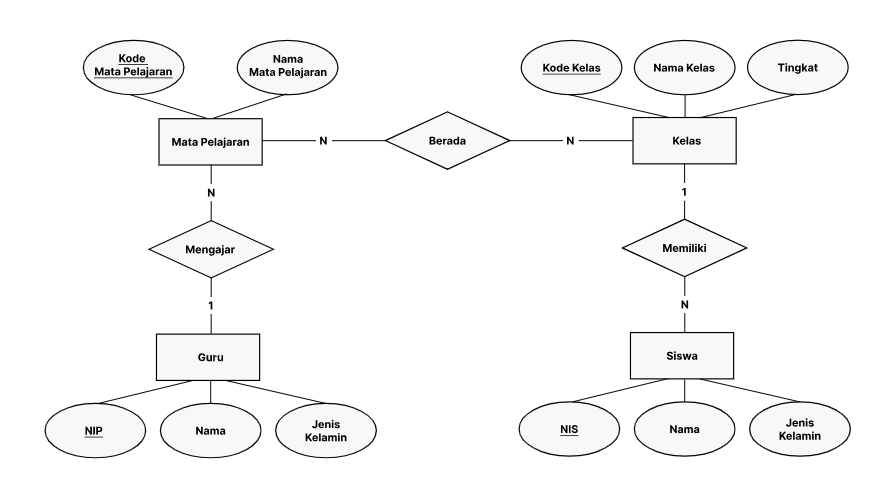
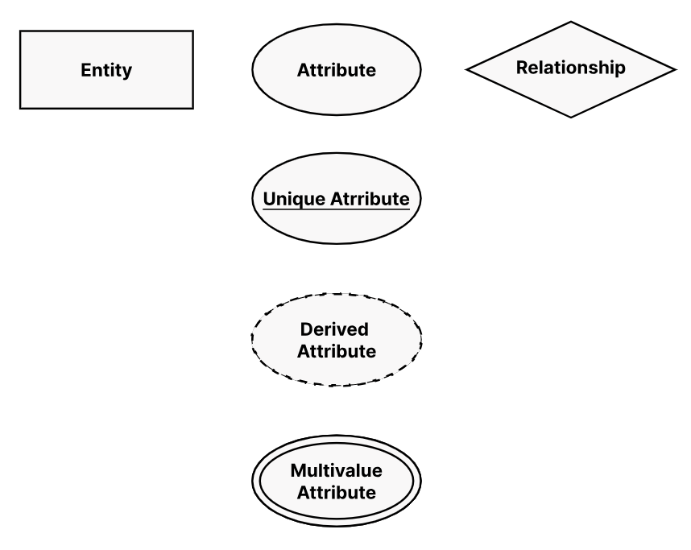
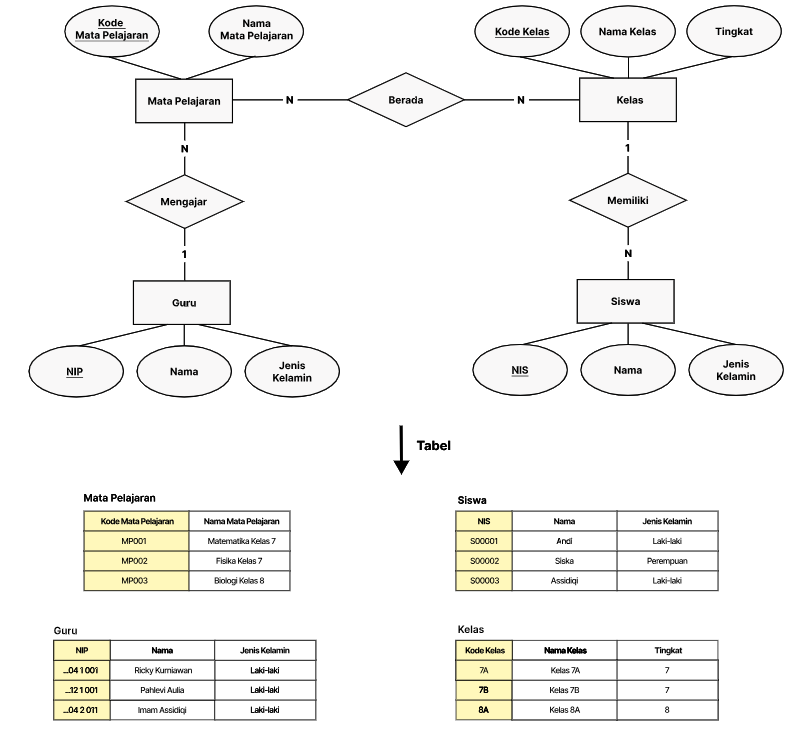

Manajemen Database
1 Manajemen Database
Data adalah kumpulan fakta atau statistik dalam bentuk text, angka, simbol dan lain-lain yang tidak membawa arti atau tujuan tertentu. Sedangkan Informasi adalah sebuah pengetahuan yang didapat dari belajar, komunikasi, riset, atau dari sebuah instruksi. Secara esensial, informasi didapatkan dari hasil analisa dan tafsiran satu atau banyak data.
Contohnya:
- Jumlah like di posting media sosial adalah satu elemen data. Ketika dikombinasikan dengan statistik keterlibatan media sosial lainnya, seperti follow, comment, dan share. Maka itu menjadi informasi yang dapat mengetahui platform media sosial mana yang berkinerja terbaik.
1.1 Introducing to database
Database adalah sekumpulan data yang tersimpan secara sistematis, yang dikelola berdasarkan ketentuan yang saling berkaitan sehingga memudahkan dalam pengelolaannya menjadi informasi.
Dalam mengelola sebuah database, beberapa karakteristik yang penting untuk dimiliki:
Kemudahan dan kecepatan dalam pengambilan data (speed)
Efisiensi ruang penyimpanan (space)
Mengurangi atau menghilangkan redundansi data.
Keakuratan (accuracy) pembentukan relasi antar data berdasar aturan tipe data, domain data, keunikan data agar data yang disimpan akurat.
Database atau basis data dalam bahasa Indonesia, terdiri dari kata basis (gudang) dan data (fakta dunia nyata yang mewakili objek) seperti manusia, barang, dan sebagainya yang diwujudkan dalam bentuk huruf, angka, simbol, atau kombinasinya.
Database biasanya diatur oleh DBMS (Database Management System) yang bertindak sebagai interface antara database dengan pengguna. Pengguna dalam hal ini bisa merupakan manusia atau aplikasi. DBMS ini bisa digunakan oleh pengguna untuk melihat, mengubah, dan mengelola informasi pada database.
Contoh DBMS paling populer yaitu:
MySQL: DBMS relasional berbasis SQL dan arsitektur client-server.
PostgreSQL: DBMS open-source tingkat perusahaan. DBMS ini mendukung SQL untuk kueri relasional.
MongoDB: DBMS dokumen not only SQL (NoSQL) yang mengompilasi informasi dalam format dan model sebuah dokumen.
SQL adalah bahasa pemrograman yang digunakan untuk melakukan manipulasi, pencarian, pengaksesan, dan lainnya dalam sebuah database.
2 ERM (Entity Relationship Model)
Entity Relationship Model (ERM) atau Entity Relationship Diagram (ERD) adalah suatu model / visualisasi untuk menggambarkan basis data berdasarkan entitas atau objek yang saling memiliki hubungan relasi.
Contoh ERD:

Dalam ERD, terdapat beberapa komponen penting:
Entity: Objek yang memiliki atribut dan dapat disimpan dalam database. Contoh: Mahasiswa, Dosen, Mata Kuliah.
Atribut: Informasi yang dimiliki oleh entity. Contoh: NIM, Nama, Alamat.
Relationship: Hubungan antar entity. Contoh: Mahasiswa mengambil Mata Kuliah.
Cardinality: Jumlah entitas yang terlibat dalam relasi. Contoh: 1 Mahasiswa mengambil banyak Mata Kuliah.
Primary Key: Atribut yang unik untuk mengidentifikasi setiap baris dalam tabel.
Foreign Key: Atribut yang menghubungkan dua tabel.
Simbol ERD:

Kardinalitas:
One to One (1:1): Satu entitas pada tabel A hanya memiliki satu entitas pada tabel B.
One to Many (1:N): Satu entitas pada tabel A memiliki banyak entitas pada tabel B.
Many to Many (M:N): Banyak entitas pada tabel A memiliki banyak entitas pada tabel B.
2.1 ERM to table
Dalam ERD, setiap entitas akan diubah menjadi tabel dalam database. Atribut menjadi kolom, dan relasi menjadi foreign key.

2.2 Database Normalization
Normalisasi merupakan sebuah teknik logical desain dalam sebuah basis data yang mengelompokkan atribut dari berbagai entitas dalam suatu relasi sehingga membentuk struktur relasi yang baik (tanpa redundansi/pengulangan data) serta sebagian besar ambiguity bisa dihilangkan.
Atau pengertian singkatnya, Normalisasi Database adalah proses pengelompokan atribut data yang membentuk entitas sederhana, nonredundan, fleksibel, dan mudah beradaptasi, Sehingga dapat dipastikan bahwa database yang dibuat berkualitas baik.
Alasan utama dilakukan normalisasi adalah untuk menghilangkan dan mengurangi redundansi data dan tujuan yang kedua adalah memastikan dependensi data (Data berada pada tabel yang tepat).
Normalisasi database dibagi menjadi beberapa bentuk, yaitu:
First Normal Form (1NF): Setiap kolom dalam tabel hanya memiliki satu nilai.
Second Normal Form (2NF): Tabel sudah dalam 1NF dan setiap kolom yang bukan primary key bergantung pada seluruh primary key.
Third Normal Form (3NF): Tabel sudah dalam 2NF dan tidak ada kolom yang bergantung pada kolom non-key.
Boyce-Codd Normal Form (BCNF): Tabel sudah dalam 3NF dan setiap ketergantungan fungsional adalah kunci kandidat.
Fourth Normal Form (4NF): Tabel sudah dalam BCNF dan tidak ada ketergantungan multivalued.
Fifth Normal Form (5NF): Tabel sudah dalam 4NF dan tidak ada ketergantungan join.
Referensi:
3 SQL (Structured Query Language)
PostgreSQL, atau kadang disingkat “pg” atau “psql” adalah sistem manajemen database relasional / Relational database management system (RDBMS) yang bersifat open source.
RDBMS adalah sistem manajemen database yang menggunakan model data relasional. Model data relasional adalah model data yang menggunakan tabel untuk menyimpan data. Setiap tabel memiliki baris dan kolom. Data juga dapat dihubungkan ke tabel lainnya melalui sebuah relasi. Untuk mengolah data di dalamnya, kita gunakan bahasa SQL (Structured Query Language).
PostgreSQL merupakan salah satu sistem manajemen database yang paling populer di dunia dan didukung oleh beberapa bahasa pemrograman termasuk Golang.
Pre-requisite:
Install PostgreSQL: https://www.postgresql.org/download/
Install pgAdmin: https://www.pgadmin.org/download/
3.1 Koneksi ke PostgreSQL
Untuk mengakses PostgreSQL dari Golang, kita memerlukan driver PostgreSQL. Salah satu driver yang populer adalah pq.
go get github.com/lib/pqBerikut adalah contoh koneksi ke PostgreSQL dari Golang:
package main
import (
"database/sql"
"fmt"
"log"
_ "github.com/lib/pq"
)
func main() {
connStr := "user=postgres password=postgres dbname=postgres sslmode=disable"
db, err := sql.Open("postgres", connStr)
if err != nil {
log.Fatal(err)
}
defer db.Close()
err = db.Ping()
if err != nil {
log.Fatal(err)
}
fmt.Println("Successfully connected!")
}Referensi:
3.2 Data definition language
Data Definition Language (DDL) adalah bahasa yang digunakan untuk mendefinisikan struktur database. DDL digunakan untuk membuat, mengubah, dan menghapus objek dalam database. Terdapat beberapa SQL Command yang dapat digunakan untuk menjalankan tugas-tugas tersebut, seperti CREATE, ALTER, DROP, TRUNCATE.
Contoh DDL:
- CREATE TABLE: Membuat tabel baru.
CREATE TABLE users (
id SERIAL PRIMARY KEY,
name VARCHAR(50),
email VARCHAR(50) UNIQUE
);- ALTER TABLE: Mengubah struktur tabel.
ALTER TABLE users ADD COLUMN age INT;- DROP TABLE: Menghapus tabel.
DROP TABLE users;- TRUNCATE TABLE: Menghapus semua data dalam tabel.
TRUNCATE TABLE users;SQL Data Types:
INT: Bilangan bulat.
VARCHAR(n): Karakter dengan panjang maksimal n.
TEXT: Karakter dengan panjang tak terbatas.
SERIAL: Auto-increment integer.
DATE: Tanggal.
TIME: Waktu.
TIMESTAMP: Waktu dan tanggal.
BOOLEAN: True atau False.
Referensi:
3.3 Data manipulation language
Data Manipulation Language (DML) digunakan untuk modifikasi data di database. DML bertanggung jawab untuk semua bentuk perubahan data dalam database.
Perintah DML yang paling sering digunakan adalah INSERT, UPDATE, dan DELETE. Mari kita bahas perintah-perintah tersebut dengan melanjutkan dengan contoh tabel yang sebelumnya sudah dibuat.
Contoh DML
- INSERT INTO: Menambahkan data ke dalam tabel.
INSERT INTO users (name, email, age) VALUES ('Aditya', 'adityarizky1020@gmail.com', 22);- UPDATE: Mengubah data yang sudah ada.
UPDATE users SET age = 23 WHERE name = 'Aditya';- DELETE: Menghapus data dari tabel.
DELETE FROM users WHERE name = 'Aditya';3.4 Data query language
Data Query Language (DQL) digunakan untuk mengambil data dari tabel di database. Tujuan dari DQL adalah untuk mendapatkan data menggunakan perintah SQL. Perintah SQL yang digunakan adalah SELECT.
Contoh DQL:
SELECT * FROM users;Perintah di atas akan mengambil semua data dari tabel users.